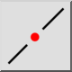

Prerušiť Medzerou
Panel s nástrojmi / ikona:

Ponuka:
Úpravy > Prerušiť Medzerou
Skratka:
D, 3
Príkazy:
breakoutgap | d3
Popis
Vyreže medzeru z čiary, oblúka alebo kružnice.
Používanie
Vyberte entitu, z ktorej chcete vyrezať medzeru.
Kliknite na stred medzery na entite.